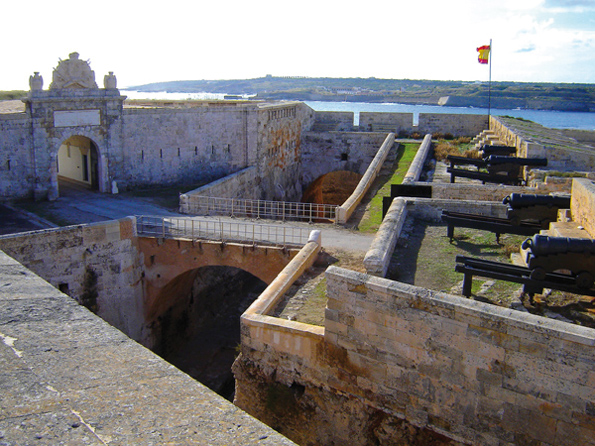

Història de Menorca
Des de l'any 902 Menorca es trobava en mans dels musulmans, pagesos berbers que vivien en alqueries i rafals escampats per l'Illa i dels quals heretàrem el seu sistema d'irrigació i topònims. Els berbers treballaven la terra, especialment els barrancs, beneficiant-se de l'aigua, i construïren el castell de Santa Àgueda per refugiar-se en cas d'atac cristià. La fortalesa disposava de murada, dos aljubs i diferents edificis per resistir l'atac.
Menorca canvià de mans l'any 1287, quan Alfons III el Liberal expulsà els berbers i retorna al món cristià.
El 1295, com a conseqüència del Tractat d'Anagni, Menorca fou retornada a Jaume II, rei del Regne de Mallorca i oncle d'Alfons III. Jaume II legislà la vida quotidiana dels nous pobladors menorquins i, el 30 d'agost de 1301, promulgà la Carta de Franqueses i Privilegis, document que regulava l'estructura social, política, econòmica i urbanística de l'illa, i que es considerà una autèntica constitució entre els menorquins. Tant aquests com els següents privilegis concedits a Menorca foren recopilats en el Llibre Vermell, que actualment es troba a Ciutadella. El segon gran document dictat per Jaume II fou el Pariatge, el 19 de març de 1301, amb l'objectiu de repoblar l'illa i que establia la divisió eclesiàstica de l'illa amb la fundació de set parròquies, donant origen a algunes poblacions actuals.
Durant segles, Menorca fou una illa productora de formatge d'ovella i de cereals i llana de gran qualitat, que comercialitzava a Mallorca, Barcelona i Itàlia. A poc a poc, les institucions locals començaren a emergir. En el segle XIV ja existia la Universitat de Menorca, situada a Ciutadella, de competències similars a l'actual Consell Insular.
L'any 1439, el governador Galcerán de Requesens implantà el sistema d'elecció del sorteig públic de càrrecs municipals, escollits en funció de l'estament social a què pertanyen, règim que perdurà fins al segle XIX, moment en què s'implantà l'actual sistema municipalista. Menorca disposava llavors d'una població eminentment pagesa i d'un petit sector d'artesans en les poblacions, essent Ciutadella la capital de l'illa.
 Entre els segles XV i XVII, Menorca va patir diversos atacs pirates. Per la seva crueltat destaquen l'assalt a Maó per Barba-rossa, el 1535, i l'atac de Mustafa Piali a Ciutadella, el 1558, que delmà la població menorquina. En resposta, es construïren talaies de vigilància, Maó i Ciutadella es fortificaren, s'edificaren els castells de Sant Felip i Sant Antoni i es mobilitzaren companyies d'homes armats per a la defensa de l'illa.
Entre els segles XV i XVII, Menorca va patir diversos atacs pirates. Per la seva crueltat destaquen l'assalt a Maó per Barba-rossa, el 1535, i l'atac de Mustafa Piali a Ciutadella, el 1558, que delmà la població menorquina. En resposta, es construïren talaies de vigilància, Maó i Ciutadella es fortificaren, s'edificaren els castells de Sant Felip i Sant Antoni i es mobilitzaren companyies d'homes armats per a la defensa de l'illa.
Els menorquins vivien en una societat marcada per la religió, amb un calendari ple de festes religioses i tradicionals, en què els actes religiosos i les corregudes de cavalls són el seu principal entreteniment. Les decisions polítiques de l'illa es prenien en el si de la Universitat General de Menorca i Particular de Ciutadella, situació que canvià quan les universitats de Maó (1640) i d'Es Mercadal i Alaior (1651) aconseguiren independitzar-se administrativament. Des de llavors, cada universitat (ajuntament) recaptava i gestionava els seus propis tributs.
L'actual paisatge menorquí és el resultat de segles de treball. Des del 1287 els pagesos, coneguts com a senyors de predi o emfiteutes, treballaven la terra, que els era cedida a canvi d'un tribut anual real. A finals del segle XVII, els terratinents perderen capacitat econòmica i imposaren un nou sistema de parceria (amitgeria). El camp produïa cereals, principalment blat, i es potencià el cultiu de la vinya, la patata i les hortalisses.
El segle XVII portà a una època convulsa. La importància estratègica de Menorca i del port de Maó interessava a les potències europees, i com a conseqüència de la Guerra de Successió, l'any 1713 Menorca passà a mans angleses. A partir de llavors, talment com si es tractés d'una joguina, Menorca patí el control d'anglesos, espanyols i francesos.
Les dominacions britàniques (1713-1756, 1763-1782 i 1798-1802) deixaren un llegat singular: torres de defensa, el Castell de Sant Felip més fortificat, el Fort de Marlborough, l'hospital de l'Illa del Rei, l'aljub d'Es Mercadal, el Camí d'en Kane, la fundació de la població d'Es Castell (1771) i el trasllat de la capital a Maó per part del governador Kane.
La dominació francesa fou breu, del 1756 al 1763, i d'ella en destaca la fundació de Sant Lluís.
 L'activitat econòmica augmentà gràcies al comerç, de la construcció naval en el port de Maó i de la presència d'un gran contingent militar. L'any 1745 es fundà Es Migjorn Gran, i dues dècades més tard, el 1768, l'Illa veié com més de 1400 ànimes menorquines emigraven a La Florida.
L'activitat econòmica augmentà gràcies al comerç, de la construcció naval en el port de Maó i de la presència d'un gran contingent militar. L'any 1745 es fundà Es Migjorn Gran, i dues dècades més tard, el 1768, l'Illa veié com més de 1400 ànimes menorquines emigraven a La Florida.
El segle XIX és una època de contrastos. En un inici se seguí la dinàmica econòmica del segle anterior, però un canvi legislatiu dictat des de Madrid va impedir el lliure comerç de cereals. La producció de vaixells a Maó va desaparèixer en poques dèca-des i la producció de vins decaigué.
Entre 1830 i 1835 l'Illa patí una gran emigració de menorquins a Algèria, impulsada per França per consolidar la colònia francesa. Deu mil menorquins, una quarta part de la població, s'instal•là al nou Eldorado. Algèria es convertí, així, en una petita Menorca al nord d'Àfrica. A causa de l'interès del mercat de Cuba i Puerto Rico, augmentà l'exportació del calçat de luxe, esdevenint aquest l'origen dels actuals mestres sabaters menorquins, reconeguts mundialment per la seva qualitat i disseny.
A principis del segle XX, Menorca fou, juntament amb Mallorca, gran productora de moneders de plata i or, avantguarda de la moda europea; milers de doners treballaven en la seva elaboració. Finalitzat el moment de glòria, el sector es transformà en una magnífica producció de bijuteria de l'illa i de frontisses única en tot l'estat espanyol. La producció de formatge, calçat i bijuteria es consolidà també al llarg d'aquest segle. Durant els anys seixanta, amb el naixement de les urbanitzacions i la construcció dels primers hotels, la indústria del turisme arriba de forma definitiva.
La declaració de Menorca com a Reserva de la Biosfera el 7 d'octubre de 1993 i l'aprovació del Pla Territorial Insular l'any 2003 són els esdeveniments principals que ajudaren a consolidar la identitat de Menorca com a illa compromesa amb el seu territori. A més, avui dia es treballa per tal que la cultura talaiòtica de Menorca sigui declarada per la UNESCO Patrimoni de la Humanitat, fet testificat per més de 1400 jaciments arqueològics de l'època talaiòtica que el visitant descobrirà en una illa de no més de 702 kilòmetres quadrats.
Menorca és l'illa idònia per gaudir d'una gastronomia, una artesania i un patrimoni cultural diferenciats. La seva història i la seva gent, juntament amb un territori que ofereix tranquil•litat, els permetrà conèixer-la i passar una estada agradable. Gaudeixin-la.